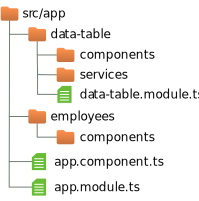
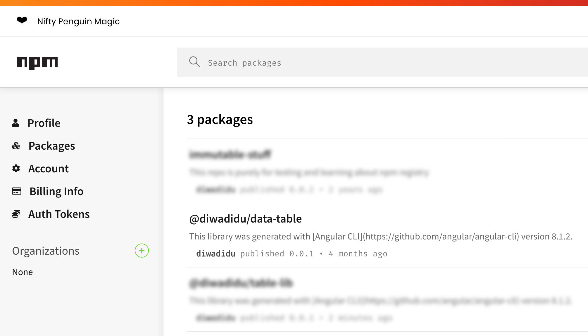

Creating an npm library from existing code
Have you ever programmed something where you thought: “I need to be able to reuse this again in the future?” Me neither — that is, until sometime earlier this year when I put together a generic data table component for Angular that is generic enough to potentially be reused in other projects.
So this post is about how to extract your functionality into its own npm module and publish that module to npm so you can import and use it in future projects.
The setup
It started when I was working on the reusable Angular table component and the concepts I built into it showed that they could lead to using that table in all kinds of different projects — and even that future developments could be ported back to other projects that already are using it.
Hence the desire to abstract out component code into its own npm library, because experience has shown me that even if something is used only on one project, the introduction of a separate npm library creates another level of abstraction that prevents developers from quickly hacking in their requirements without giving thought to the greater use of the library.
Setting up the module for npm publishing
Starting out, I had already created a separate Angular module for the table display in my project, which has the following file/folder structure:

So the first thing to do is create the library using the Angular CLI in the following manner, from the root of the project:
# ng generate library @gitusername/project-name
ng generate library @diwadidu/data-tableThe first line shows the generic command, whereas the second line fills that abstraction with
life, using sample values, i.e. @diwadidu for the scope and data-table
for the name of the library.
This command will set up a new folder structure, adding a new projects folder into the project’s
root directory. Under projects, it will create a new separate space under
diwadidu/data-table.
As someone once said: “There are only two hard things in Computer Science: Cache invalidation,
naming things and off-by-one-errors.” The problem with naming things here is that your
chosen name might already be taken. To get around that “problem”, you can
scope your library as shown here, which will eventually
lead to a library in npm at @username/project-name.
If you work for a company, this paradigm of scoping will also permit you to keep your libraries within the company and also in a private space and not distribute potentially very valuable information all over “the internet.” In short, I would always recommend using name spaces.
If you explore the folder created by ng generate library you’ll see that there already are
a number of files in it to get you started: Under the lib directory, you’ll find stubs for
a component as well as a service.
Since we’re porting our existing module into a new package, we first remove the existing stubs
and move our own code into the lib folder. If you’re using an IDE such as IntelliJ to move
the files, you’ll get a warning that the files you’re trying to remove are in use by other
files. That dependency is mostly the public-api.ts file, to which we’re going to get in
a moment.
So remove the stubs and copy your existing implementation into the src/lib under projects,
for example (your folder structure might differ from mine):
rm -rf projects/diwadidu/data-table/src/lib/*
cd src/app
git mv your-project-dir ../../projects/diwadidu/data-table/src/lib So now, as promised, let’s look at the public-api.ts file in your library’s src
folder. By default, it looks like this:
/*
* Public API Surface of table-lib
*/
export * from './lib/table-lib.service';
export * from './lib/table-lib.component';
export * from './lib/table-lib.module';So it’s essentially only reexporting objects from your library, i.e. defines what will become publicly accessible. In my case, where I only want users of the library to interface with one root component and permit Typescript to reference some types I’m using internally, I change its content to:
export * from './lib/components/data-table/data-table.component';
export * from './lib/data-table.module';
export * from './lib/types/data-table.type';
export * from './lib/types/page-change-event.type';This step permits us to specify a public API to an entire collection of pieces but keep its
detailed functionality, as well as any dependent components from its user. So here,
we only allow the programmer using this library to use the root data-tabe.component.ts and
import its module as well as use some types that are describing the data passed to and events
emitted from the module. So basically, we’re describing the interface of this library component,
its public api, go figure!
This permits us to internally change the make up and functionality of the package without affecting how the library is being used and knowing that as long as we don’t change the exported pieces, we won’t affect the library’s users.
Building, publishing and using the new package
One file that I haven’t mentioned yet is the README.md file, which was also generated by
the Angular CLI when we originally set up our library using ng generate library .... Right
now, all it contains is boilerplate which should be replaced by meaningful information on
what the library does and how to use it. I’ll skip that part here.
So now, finally, we have everything set up and it’s time to build and publish our library and to include it in the project in which we originally built it. to have the library built for distribution in npm, we can again use the Angular command-line tool. In my case:
ng build @diwadidu/data-table --prodThis command will build the required files for publication, such as type hints files, version for the different versions of ECMAScript/JavaScript. At the end of its work, it will generate output in the shell, which ends with (paths truncated):
...
------------------------------------------------------------------------------
Built Angular Package!
- from: ..../data-table/projects/diwadidu/table-lib
- to: ..../data-table/dist/diwadidu/table-lib
------------------------------------------------------------------------------Now that we have built our library, we need to make is accessible. With the introduction of
Angular 9 andd the Ivy compiler, there has been a change in how to publish your library
which concerns the use of the --prod flag, which will use the old compiler.
To publish your library, you again use npm in the following manner:
npm publish --access publicThis will package up your code and push it into your npm space, if you’re already logged in — if you’re not logged in, you need to do so, of course. Once the command executes, you can go and look in your npm space for your new package, which will look like this:

If you omit the --access public flag, npm will return with a “402 Payment Required” and ask
you to log in. By default, npm assumes you’re going to store a private package, which is
reserved for paying customers.
Using your new package
So now, your new package is up on npm and all that’s left to do is to update the references in your Angular project to use that new package from npm instead of the local version you have been using thus far.
In your other components, you might have imported the data table like this:
import { Component, OnInit } from '@angular/core';
import { DataTableType, PageChangeEventType } from '../../../data-table/';
import { EmployeeType } from '../../types/employee.type';
export class SomeComponent {
...
}That now needs to change to use the package from npm, so the changes would be:
import { Component, OnInit } from '@angular/core';
import { DataTableType, PageChangeEventType } from '@diwadidu/data-table';
import { EmployeeType } from '../../types/employee.type';
export class SomeComponent {
...
}The other places to check are the package.json and app.module.ts files, which now need
entries for the new library:
import { AppRoutingModule } from './app-routing.module';
import { AppComponent } from './app.component';
import { DataTableModule } from '@diwadidu/table-lib';
import { EmployeesComponent } from './employees/components/employee-list/employees.component';
@NgModule({
declarations: [
AppComponent,
EmployeesComponent,
],
imports: [
AppRoutingModule,
BrowserModule,
DataTableModule,
],
providers: [],
bootstrap: [AppComponent]
})
export class AppModule {
}
Discussion and Wrap-up
So after this creation of a separate npm module, what have we gained?
The most obvious benefit is reusability of functionality. If we use this mechanism to separate out common functionality, we can save time in future projects by reusing already existing npm modules in our code. This also permits to standardize the behavior and appearance of several separate apps which all are created by the same company and thus should behave the same way. This was the case for one of my clients when they set up their repositories with common functionality.
Another benefit, in particular for bigger companies, is that there is an additional barrier for developers to simply (and quickly) hacking in their own requirements — often without knowing all the use cases and therefore potentially destroying other projects with their changes in the process. The repo or pushing to npm can be restricted so that any change requests have to be reviewed and implemented by a group of maintainers, who are then responsible for making and communicating changes.
In the long run, this more cumbersome process will pay dividends when large projects cannot be roadblocked because of a bad commit by a person who didn’t fully grasp the library’s reason for being — and its intricacies.
Finally, with Microfrontends rightfully now all the rage these days, this paradigm is one possible mechanism to implement and distribute common/shared functionality between multiple separate frontends.